Tradiciones vivas de Chicama
Danzas Folklóricas
2 agrupaciones activas que mantienen viva la identidad del distrito de Chicama
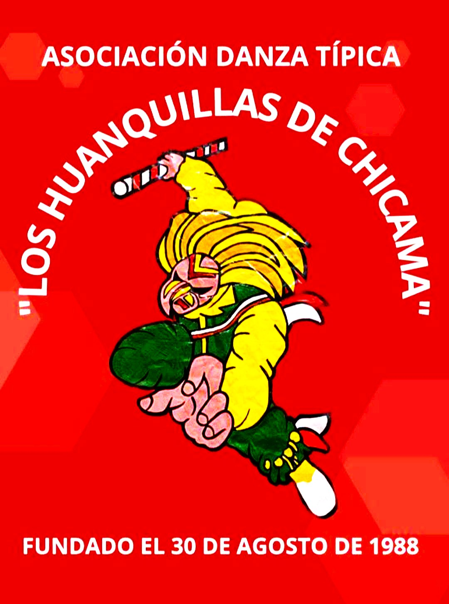
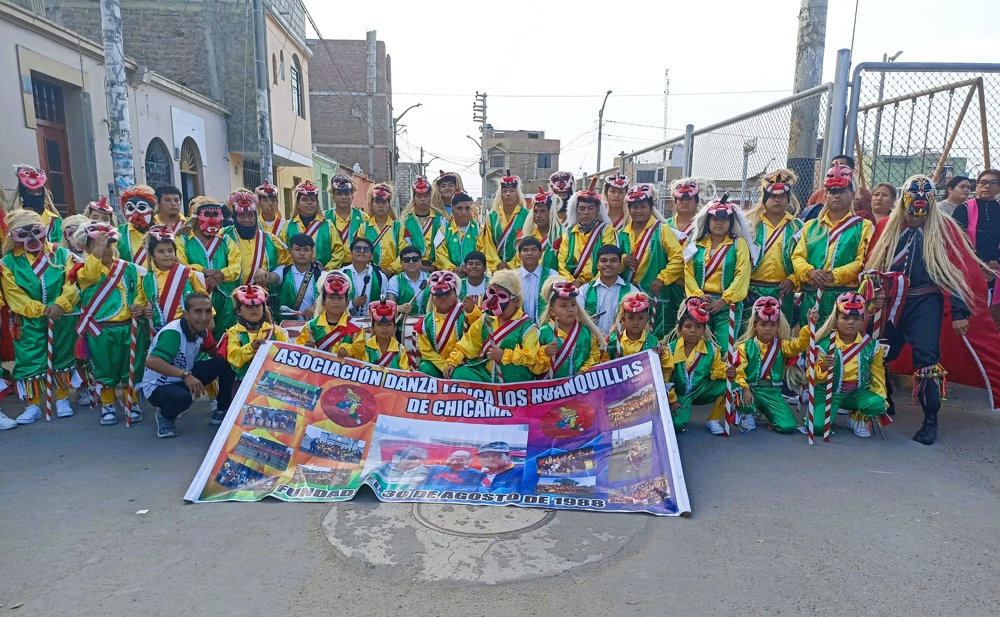
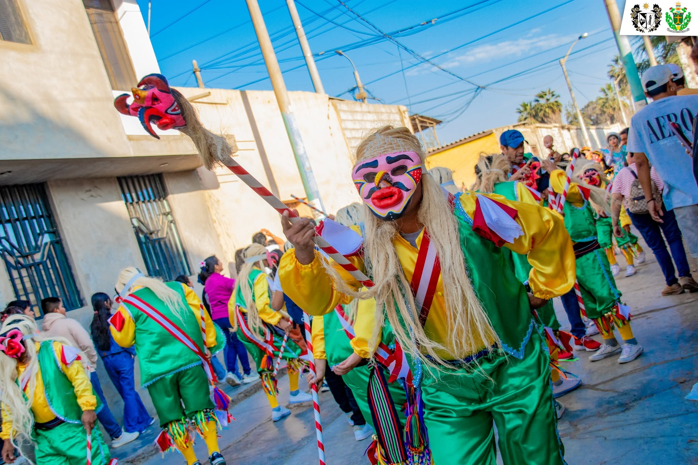
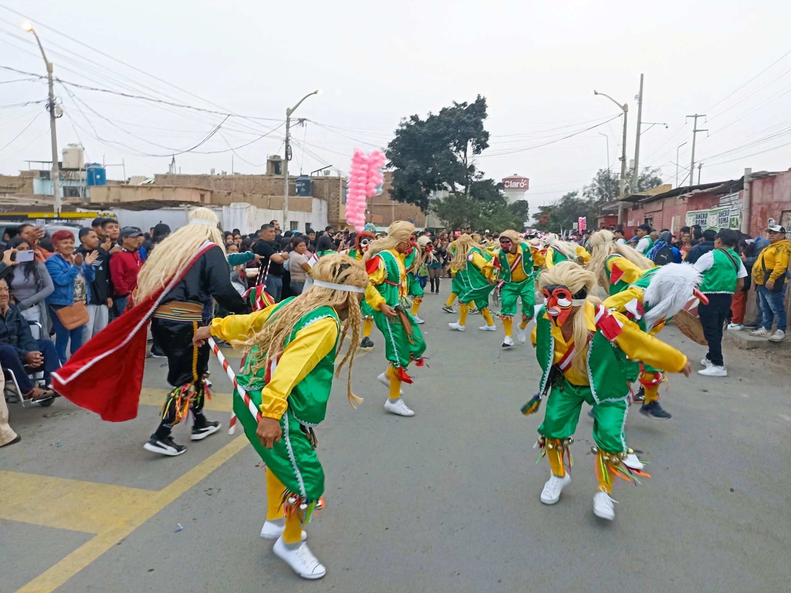
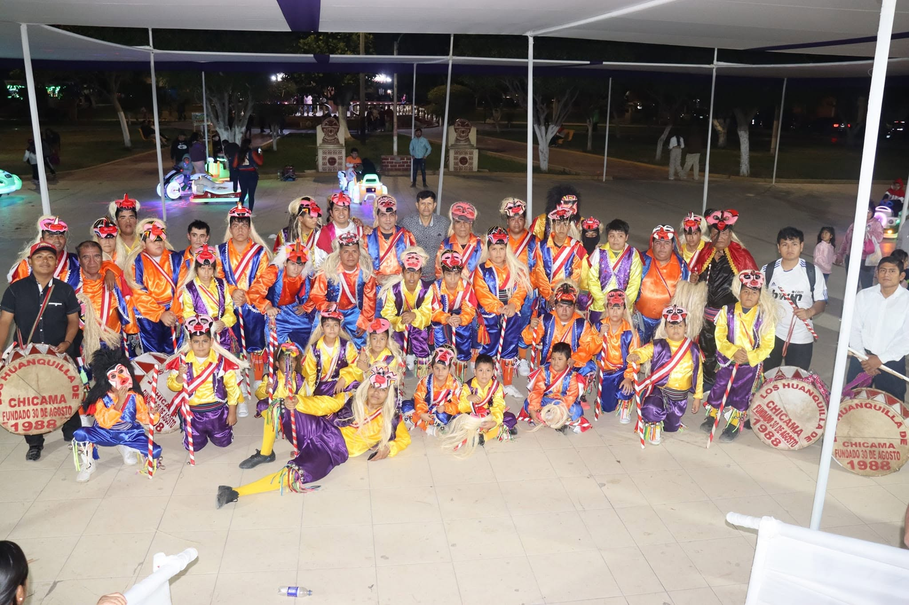
Los Huanquillas de Chicama
Las Huanquillas de Chiclín son una de las danzas más representativas y antiguas del distrito de Chiclín, ubicado en el valle Chicama, región La Libertad – Perú. Esta danza tradicional refleja la identidad cultural del pueblo y se presenta principalmente durante fiestas patronales, celebraciones religiosas y actividades culturales.
Danza tradicional que representa la fuerza, la fe y la identidad cultural del pueblo chiclinero. Sus coloridos trajes y movimientos vigorosos mantienen viva una de las expresiones folclóricas más importantes de la región.

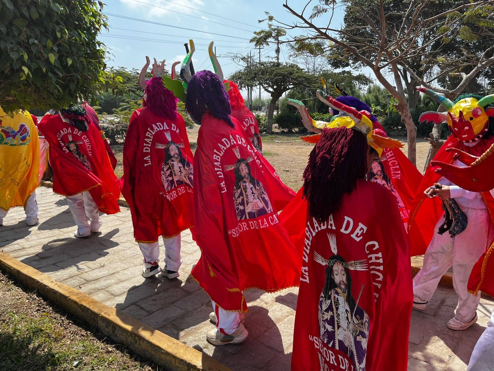
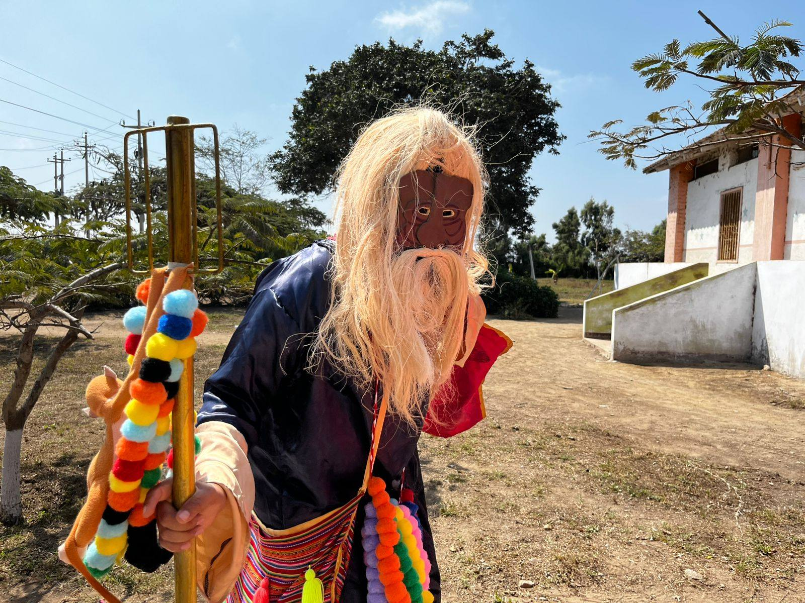

Diablada de Chiclín
La Diablada de Chiclín es una danza folklórica tradicional que representa la lucha entre el bien y el mal, manteniendo viva la fe, la identidad cultural y las costumbres del pueblo chiclinero.
Fundada entre los años 1985 y 1986 por Carlos Otiniano, esta danza fue reactivada en mayo de 2024 luego de 14 años, reuniendo actualmente a tres generaciones de danzantes que participan en las festividades patronales en honor al Señor de la Caña y otras celebraciones culturales.
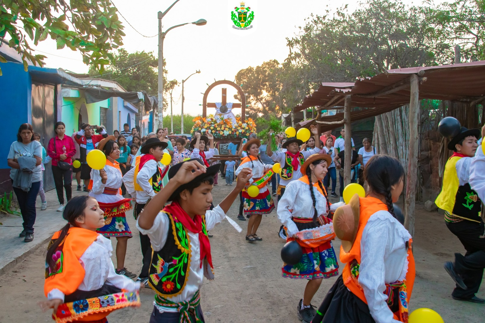

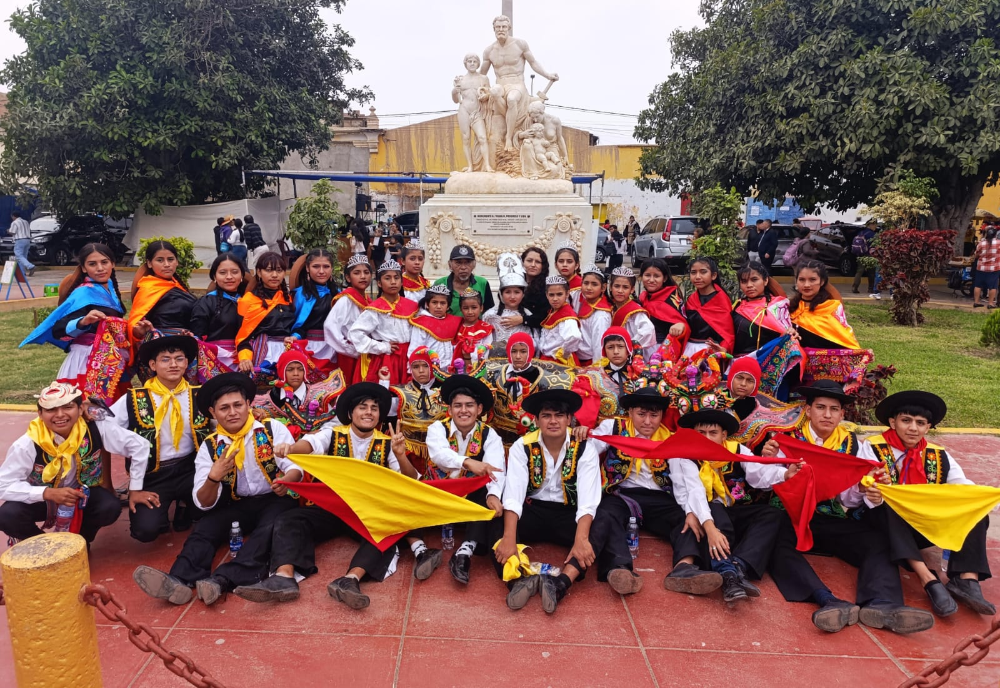
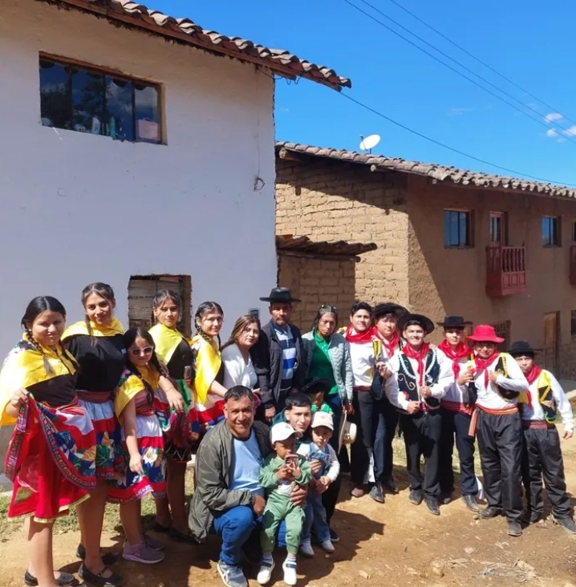
Los Ancashinos de Chiclín
Los Ancashinos de Chiclín es una danza folclórica tradicional que destaca por sus movimientos enérgicos, música festiva y gran valor cultural dentro del Valle Chicama.
Sus danzantes representan la alegría, unión y costumbres del pueblo chiclinero mediante coloridos vestuarios y expresiones artísticas que mantienen viva la tradición regional.

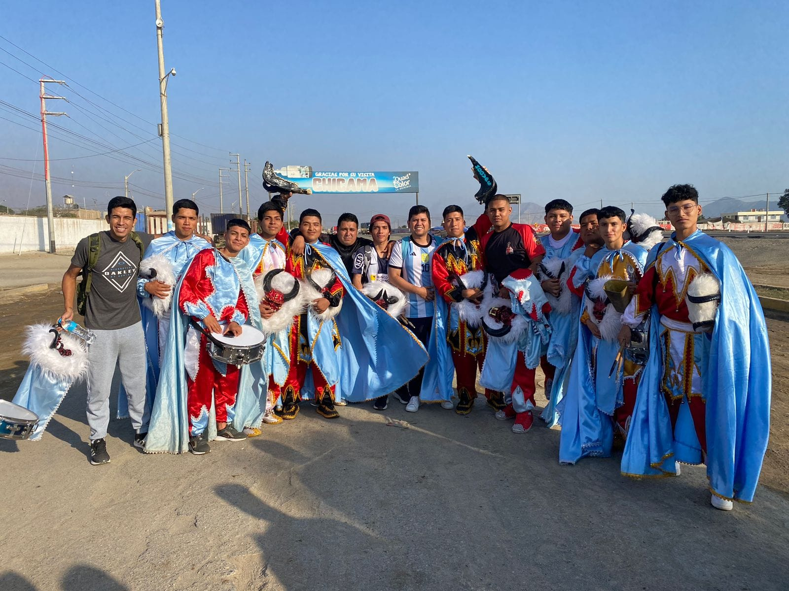
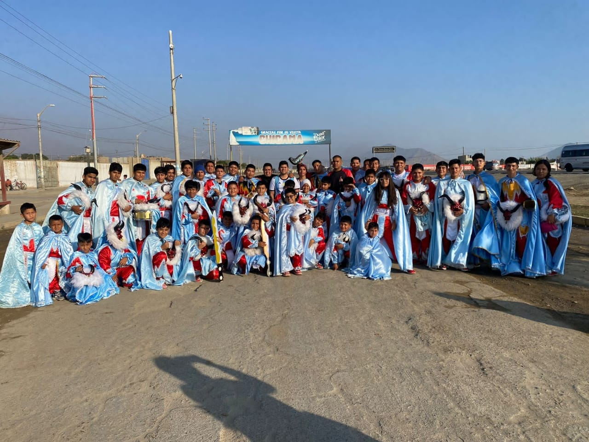

Los Salaverry de Chiclín
Los Diablos de Salaverry es una reconocida agrupación tradicional festiva originaria del puerto de Salaverry que, con el paso de los años, también ha establecido una sede y participación cultural en Chiclín.
Participa en pasacalles, procesiones y celebraciones patronales como las festividades del Señor de la Caña, manteniendo viva la tradición folclórica y religiosa.


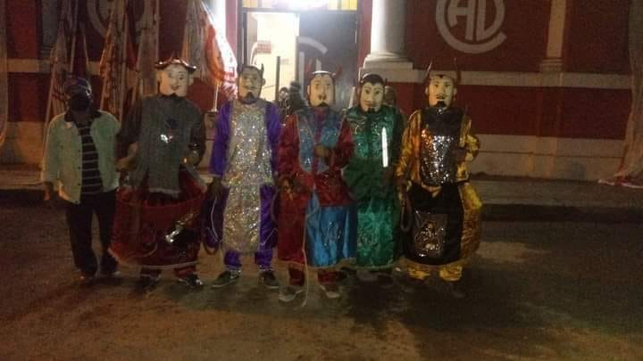
Los Diablos de Chiclín
Los Diablos de Chiclín es una banda tradicional originada el 6 de junio de 1936 por ex trabajadores de la antigua hacienda Chiclín. Su principal objetivo fue mantener el orden durante las festividades en honor al Señor de la Caña.
Esta representación cultural simboliza al diablo caído y vencido ante el poder de Dios. Actualmente participan en fiestas patronales, pasacalles, novenas y eventos culturales.
Fiesta Regional del Señor de la Caña
Organizada por la Hermandad del Señor de la Caña — celebración el 28 de junio

Fiesta Regional del Señor de la Caña
Una de las celebraciones religiosas más importantes del norte del Perú. Cada año, durante el mes de junio, el pueblo de Chiclín se viste de fe, color y tradición para honrar a su santo patrón — el Señor de la Caña — una devoción que nació entre los trabajadores cañaveleros de la antigua hacienda y que hoy convoca a miles de peregrinos de toda La Libertad.
La festividad incluye novenario, misas, paseo de la cera, procesión solemne, danzas folklóricas, bandas en vivo, feria gastronómica y quema de fuegos artificiales. Una experiencia de fe y cultura que se celebra ininterrumpidamente desde 1932.
Los 3 Días de la Gran Festividad
Desde el novenario que inicia en junio hasta los días centrales de celebración, el pueblo de Chiclín vive su fe y tradición con una devoción de más de 90 años.

Día de Vísperas
Día de Vísperas
- 🕔 3:00 pm — Quema de cameratazos anunciando la víspera
- 💐 4:00 pm — Arreglo floral del anda del Señor de la Caña
- 📿 5:00 pm — Rosario ofrecido por los devotos
- 🎭 5:30 pm — Mini paseo de Ceras y procesión con danzas típicas invitadas
- 🎶 9:00 pm — Gran baile popular con orquestas en vivo
- 🍲 11:00 pm — Gran caldo para todos los asistentes y fieles devotos
Paseo de Ceras
Paseo de Ceras
- 🎭 Gran pasacalle de grupos de danza por las calles de Chiclín
- 🥁 Bandas de músicos en vivo acompañando el recorrido
- 👼 Angelitos y sahumadoras en procesión
- 🏛️ Delegaciones de autoridades locales y regionales
- 🎆 Fuegos artificiales nocturnos
- 💃 Verbena cultural y baile popular
Día Central
Día Central
- ⛪ 10:00 am — Traslado de la Sagrada Imagen del Inter
- 🙏 11:00 am — Solemne Misa Central en el templo Cristo Rey de Chiclín
- 🚶 12:00 pm — Gran Procesión por las calles con bandas y danzas folclóricas
- 🍽️ 1:30 pm — Almuerzo de confraternidad para todos los asistentes
- 💃 2:00 pm — Gran baile social
- 🎆 Noche — Quema de castillos y fuegos artificiales
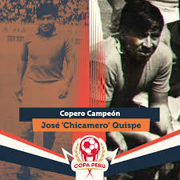
EN HONOR AL EXFUTBOLISTA JOSÉ CHICAMERO QUISPE
⚽🏆 #CoperoCampeón José 'Chicamero' Quispe es uno de los emblemas de la historia de la Copa Perú. Fue el primer capitán en levantar el trofeo del fútbol macho, con Alfonso Ugarte de Chiclín en 1967, y a lo largo de su trayectoria defendió a siete equipos en el plano amateur.
Historia de José Chicamero Quispe
● Alfonso Ugarte de Chiclín (Primeras etapas): Llegó al cuadro de los "Diablos Rojos" en 1956, permaneciendo allí hasta 1958. Reapareció brevemente en 1964 y regresó de forma definitiva para el proceso de 1966.
● Aventura en Piura: Emigró temporalmente a Piura para jugar por el Sport Escudero (1959-1960) y posteriormente dio el salto al histórico Atlético Grau de Piura durante tres temporadas consecutivas (1961, 1962 y 1963).
● Selecciones y otros clubes: Integró la Selección de Trujillo, formó parte de una Selección Preolímpica amateur e incluso tuvo un breve paso por el Atlético Trujillano en 1965.
Aquel mítico plantel de los "Diablos Rojos" estuvo conformado por figuras como Jorge Vichera, Óscar Villalobos, Raúl Carrión, Jorge Quipuzco y el gran Manuel "Meleque" Suárez.
El 28 de mayo de 1967, tras vencer en la Finalísima jugada en el Estadio Nacional de Lima a rivales de la talla del FBC Melgar de Arequipa (1-0), el Alfonso Ugarte se coronó como el primer campeón de la historia de la Copa Perú. En una ceremonia sumamente emotiva en el Palacio de Gobierno, el presidente de la República, Fernando Belaúnde Terry, le entregó directamente a José "Chicamero" Quispe el imponente trofeo plateado, inmortalizándolo como el primer capitán en alzar el "fútbol macho".

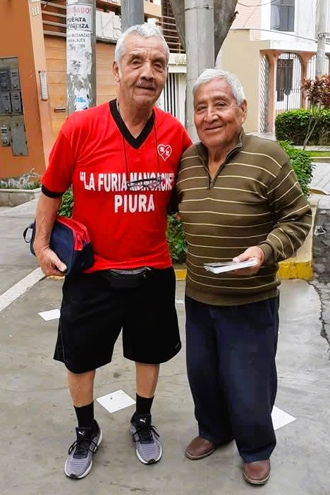
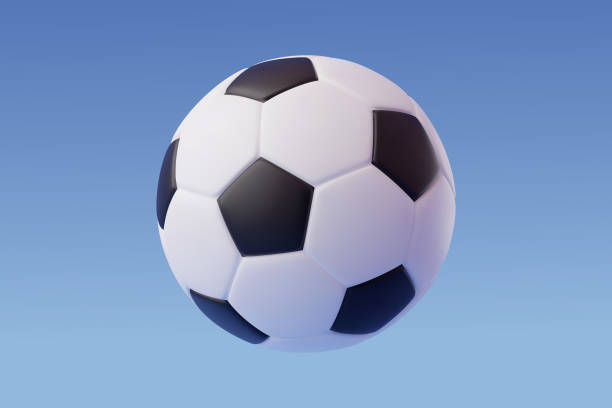
Últimos años en las canchas (1968-1973)reforzó al Alianza Guadalupe.
Regresó por última vez para defender al Alfonso Ugarte de Chiclín.
Tuvo un breve retorno a sus orígenes con el Defensor Chiclín.
Se retiró oficialmente vistiendo las sedas del club Adelante Juventud de Chicama en la temporada.
Defensor Chiclín — Etapa inicial amateur.
Alfonso Ugarte de Chiclín — Primer ciclo en el club.
Sport Escudero (Piura) — Refuerzo regional.
Atlético Grau (Piura) — Consolidación en el norte.
Atlético Trujillano — Torneo local.
Alfonso Ugarte de Chiclín — Segundo ciclo.
Alfonso Ugarte de Chiclín — Capitán y Campeón Histórico Copa Perú 1967.
Alianza Guadalupe — Torneo amateur.
Alfonso Ugarte de Chiclín — Ciclo final con los "Diablos Rojos".
Defensor Chiclín — Retorno conmemorativo.
Adelante Juventud de Chicama — Temporada de retiro oficial.
Album de Fotos.